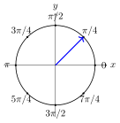
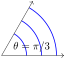
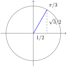
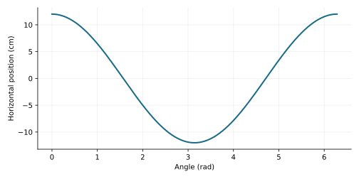

Angles, Radian Measure, and the Unit Circle
Opening context: measuring rotation in science
A laboratory centrifuge rotates thousands of times per minute, an imaging arm sweeps through a sector, and a point on a wheel travels along a circular arc. All three situations require a common mathematical language for rotation. This chapter builds that language, beginning with directed angles and radians and ending with unit-circle coordinates, exact trigonometric values, and applied circular-motion models.
Learning outcomes
After completing this chapter, students should be able to convert between degrees and radians; identify coterminal and reference angles; calculate arc length and sector area; derive exact unit-circle coordinates; evaluate all six trigonometric functions and identify where they are undefined; use symmetry and periodicity; model angular and tangential speed; and explore these ideas in R and Python.
Prerequisite check
Review the distance formula, the Pythagorean theorem, similarity of triangles, coordinate quadrants, and elementary function notation. In particular, the equation \(x^2+y^2=r^2\) describes a circle of radius \(r\) centered at the origin.
How to use the computational laboratories
Predict and calculate by hand first. Then run the complete R listing and the corresponding Python listing, which are presented sequentially rather than side by side. Compare exact and approximate answers and interpret units.
Angles as rotations and directed angles
An angle measures rotation from an initial ray to a terminal ray. Counterclockwise rotation is positive and clockwise rotation is negative. The same terminal ray can be reached after any integer number of full turns: angles differing by \(360^\circ k\) are coterminal. This distinction matters when an angle describes accumulated rotation rather than just position.
Example 1. A wheel rotates \(-450^\circ\). Find a positive coterminal angle and the number of clockwise revolutions.
Worked solution. Adding \(720^\circ\) gives \(270^\circ\). The signed number of revolutions is \(-450/360=-1.25\). The terminal position alone does not preserve the total rotation.
Guided practice 1.
Find two positive and two negative angles coterminal with \(135^\circ\). Explain whether they represent identical motions.
Reasoning check.
Before using a calculator, predict the quadrant, sign, units, and whether the result is exact or approximate. Explain one common mistake a student could make here.
Degree and radian measure
A radian is the central angle that subtends an arc whose length equals the circle radius. One full revolution is \(2\pi\) radians, so \(180^\circ=\pi\) radians. To convert degrees to radians multiply by \(\pi/180\); to convert radians to degrees multiply by \(180/\pi\). Radians are dimensionless ratios, but explicitly labeling them avoids confusion.
Example 2. Convert \(225^\circ\) to radians and \(-5\pi/6\) radians to degrees.
Worked solution. \(225(\pi/180)=5\pi/4\) radians, while \((-5\pi/6)(180/\pi)=-150^\circ\).
Guided practice 2.
Convert \(72^\circ\), \(-315^\circ\), and \(11\pi/12\) radians. Explain why the radian conversion is exact.
Reasoning check.
Before using a calculator, predict the quadrant, sign, units, and whether the result is exact or approximate. Explain one common mistake a student could make here.
Arc length and the geometry of radians
If a circle of radius \(r\) has central angle \(\theta\) measured in radians, the signed arc displacement is \(r\theta\) and the physical arc length is \(s=r|\theta|\). This formula follows from the proportion \(s/(2\pi r)=|\theta|/(2\pi)\). It is not correct to insert a degree measure directly into \(s=r\theta\).
Example 3. A pulley of radius \(12\) cm rotates through \(150^\circ\). How far does a point on its rim travel?
Worked solution. Convert \(150^\circ=5\pi/6\) rad. Thus \(s=12(5\pi/6)=10\pi\approx31.42\) cm.
Guided practice 3.
A wheel of radius \(0.35\) m turns \(3.5\) radians. Find the rim displacement. Repeat for a clockwise rotation of \(-3.5\) radians.
Reasoning check.
Before using a calculator, predict the quadrant, sign, units, and whether the result is exact or approximate. Explain one common mistake a student could make here.
Area of a circular sector
A sector occupies the fraction \(|\theta|/(2\pi)\) of a full disk. Consequently its area is \(A=\frac12r^2|\theta|\) for \(\theta\) in radians. The area is nonnegative even when the directed angle is negative. The relationship is geometric, not a new definition of radians.
Example 4. Find the area of a sector with radius \(8\) cm and angle \(3\pi/4\).
Worked solution. \(A=\frac12(8)^2(3\pi/4)=24\pi\approx75.40\) cm\(^2\).
Guided practice 4.
A sector of radius \(6\) cm has area \(9\pi\) cm\(^2\). Determine its central angle in radians and degrees.
Reasoning check.
Before using a calculator, predict the quadrant, sign, units, and whether the result is exact or approximate. Explain one common mistake a student could make here.
Standard position, quadrants, and reference angles
An angle in standard position starts on the positive horizontal axis. Its terminal side may lie in one of four quadrants or on an axis. A reference angle is the acute angle between the terminal side and the horizontal axis. It is useful for determining signs and exact trigonometric values without memorizing separate triangles in every quadrant.
Example 5. Find the reference angle for \(210^\circ\) and \(-45^\circ\).
Worked solution. \(210^\circ\) lies in quadrant III, so its reference angle is \(210^\circ-180^\circ=30^\circ\). The angle \(-45^\circ\) lies in quadrant IV and has reference angle \(45^\circ\).
Guided practice 5.
Find the quadrant and reference angle for \(7\pi/6\), \(5\pi/3\), and \(-2\pi/3\).
Reasoning check.
Before using a calculator, predict the quadrant, sign, units, and whether the result is exact or approximate. Explain one common mistake a student could make here.
The unit circle and coordinate definitions
On the unit circle \(x^2+y^2=1\), the point reached by angle \(\theta\) has coordinates \((\cos\theta,\sin\theta)\). Thus cosine is the horizontal coordinate and sine is the vertical coordinate. This definition extends the right-triangle ratios beyond acute angles. The identity \(\cos^2\theta+\sin^2\theta=1\) follows immediately from the circle equation.
Example 6. Find \((\cos(2\pi/3),\sin(2\pi/3))\).
Worked solution. The reference angle is \(\pi/3\) and the terminal side lies in quadrant II, so the point is \((-1/2,\sqrt3/2)\).
Guided practice 6.
Find the unit-circle coordinates at \(5\pi/4\) and \(11\pi/6\), then verify the Pythagorean identity.
Reasoning check.
Before using a calculator, predict the quadrant, sign, units, and whether the result is exact or approximate. Explain one common mistake a student could make here.
Special triangles and exact trigonometric values
A \(45^\circ\)–\(45^\circ\)–\(90^\circ\) triangle has side ratios \(1:1:\sqrt2\). A \(30^\circ\)–\(60^\circ\)–\(90^\circ\) triangle has ratios \(1:\sqrt3:2\). Dividing the legs by the hypotenuse gives the exact unit-circle coordinates for multiples of \(\pi/6\) and \(\pi/4\). Exact values communicate structure that decimal approximations can hide.
Example 7. Compute \(\sin(5\pi/6)\) and \(\cos(7\pi/4)\) exactly.
Worked solution. The first is in quadrant II with reference angle \(\pi/6\), giving \(1/2\). The second is in quadrant IV with reference angle \(\pi/4\), giving \(\sqrt2/2\).
Guided practice 7.
Evaluate \(\sin(4\pi/3)\), \(\cos(3\pi/4)\), and \(\tan(\pi/6)\) exactly.
Reasoning check.
Before using a calculator, predict the quadrant, sign, units, and whether the result is exact or approximate. Explain one common mistake a student could make here.
Tangent and the remaining trigonometric ratios
Where \(\cos\theta\ne0\), define \(\tan\theta=\sin\theta/\cos\theta\). Its reciprocal is cotangent where sine is nonzero; secant and cosecant are the reciprocals of cosine and sine, respectively. Undefined values are not zero: \(\tan(\pi/2)\) is undefined because its denominator is zero.
Example 8. Find \(\tan(2\pi/3)\) and state whether \(\sec(\pi/2)\) exists.
Worked solution. \(\tan(2\pi/3)=(\sqrt3/2)/(-1/2)=-\sqrt3\). Since \(\cos(\pi/2)=0\), \(\sec(\pi/2)\) is undefined.
Guided practice 8.
Determine the exact values of \(\tan(5\pi/4)\) and \(\csc(7\pi/6)\) and identify all denominator restrictions.
Reasoning check.
Before using a calculator, predict the quadrant, sign, units, and whether the result is exact or approximate. Explain one common mistake a student could make here.
Symmetry, periodicity, and coterminal angles
A full rotation returns to the same point, so sine and cosine repeat after \(2\pi\): \(\sin(\theta+2\pi k)=\sin\theta\) and \(\cos(\theta+2\pi k)=\cos\theta\). Reflection across the horizontal axis shows that cosine is even and sine is odd. Tangent has period \(\pi\) where defined. These properties reduce large and negative angles to manageable ones.
Example 9. Evaluate \(\sin(-11\pi/6)\) without a calculator.
Worked solution. Adding \(2\pi\) gives \(\pi/6\), so \(\sin(-11\pi/6)=1/2\).
Guided practice 9.
Simplify \(\cos(-7\pi/3)\) and \(\tan(13\pi/4)\) using periodicity.
Reasoning check.
Before using a calculator, predict the quadrant, sign, units, and whether the result is exact or approximate. Explain one common mistake a student could make here.
Angles from coordinates and inverse trigonometry
If \((x,y)\) lies on a circle of
radius \(r>0\), then \(\cos\theta=x/r\) and \(\sin\theta=y/r\). An inverse sine or cosine
returns a principal angle, not necessarily the angle describing the
original point’s quadrant. The two-argument arctangent function (called
atan2 in R and Python) uses both coordinates to recover the
appropriate direction.
Example 10. A point is \((-3,4)\) relative to the origin. Find its radius, sine, cosine, and approximate direction.
Worked solution. \(r=5\), so \(\sin\theta=4/5\) and \(\cos\theta=-3/5\). The direction is in quadrant II: \(\theta\approx126.87^\circ\).
Guided practice 10.
A displacement vector is \((5,-12)\). Determine its radius, sine, cosine, and standard-position angle.
Reasoning check.
Before using a calculator, predict the quadrant, sign, units, and whether the result is exact or approximate. Explain one common mistake a student could make here.
Angular and linear speed
Angular speed is \(\omega=\Delta\theta/\Delta t\) in radians per unit time. A point at radius \(r\) has tangential speed \(v=r|\omega|\). Revolutions per minute must be converted to radians per second when SI units are used. This relationship connects trigonometry to rotating machinery, laboratory centrifuges, and motion models.
Example 11. A rotor turns at 120 revolutions per minute. Find its angular speed in rad/s and the speed of a point \(0.10\) m from its center.
Worked solution. \(120/60=2\) rev/s, hence \(\omega=4\pi\) rad/s and \(v=0.10(4\pi)=0.4\pi\approx1.257\) m/s.
Guided practice 11.
A disk of radius \(0.18\) m spins at 75 rpm. Find angular and rim speeds, carefully tracking units.
Reasoning check.
Before using a calculator, predict the quadrant, sign, units, and whether the result is exact or approximate. Explain one common mistake a student could make here.
Circular motion as a parametric model
For uniform circular motion of radius \(r\) and angular speed \(\omega\), position can be written \(x(t)=r\cos(\omega t+\phi)\) and \(y(t)=r\sin(\omega t+\phi)\). The phase \(\phi\) determines the starting location. The resulting path is a circle, although each coordinate varies periodically in time. This is an important bridge to sinusoidal functions and parametric curves.
Example 12. A point travels on a circle of radius 3 with \(\omega=\pi/2\) rad/s, starting at \((3,0)\). Find its position at \(t=1\) second.
Worked solution. \(x(1)=3\cos(\pi/2)=0\) and \(y(1)=3\sin(\pi/2)=3\), so the point is \((0,3)\).
Guided practice 12.
Model a point moving clockwise on a circle of radius 2, starting at \((0,2)\) with angular speed \(\pi\) rad/s.
Reasoning check.
Before using a calculator, predict the quadrant, sign, units, and whether the result is exact or approximate. Explain one common mistake a student could make here.
Applications and model interpretation
A mathematical model must state whether an angle is a rotation, a direction, or a measured central angle; whether the radius is constant; and whether a signed or unsigned quantity is needed. In a biomedical imaging system, a scanning arm may sweep through a sector; in a centrifuge, the radial position affects tangential speed. The formulas are useful only when the assumptions match the physical situation.
Example 13. A scanning device sweeps through \(110^\circ\) at a fixed radius of 0.4 m. Compute arc length and sector area.
Worked solution. \(\theta=11\pi/18\) radians. Then \(s=0.4(11\pi/18)\approx0.768\) m and \(A=\frac12(0.4)^2(11\pi/18)\approx0.154\) m\(^2\).
Guided practice 13.
A scanning arm doubles its radius while retaining the same angular sweep. Predict and verify the factors by which arc length and sector area change.
Reasoning check.
Before using a calculator, predict the quadrant, sign, units, and whether the result is exact or approximate. Explain one common mistake a student could make here.
Visual investigations
Investigation 1: One full turn and the radian scale

Trace the circle counterclockwise. Explain why one revolution is \(2\pi\) radians and why a negative angle reverses the direction. Mark \(-\pi/2\) and \(5\pi/2\) on the same diagram and discuss their different accumulated rotations.
Investigation 2: Arc length grows linearly in radius

At fixed \(\theta=\pi/3\), compare radii \(r=1,2,3\). Build a table of \(s=r\theta\) and \(A=r^2\theta/2\). Which quantity doubles and which quadruples when the radius doubles?
Investigation 3: Exact unit-circle coordinates

Use the \(30\)–\(60\)–\(90\) triangle to derive the coordinates at \(\pi/3\). Reflect the point across the vertical and horizontal axes to obtain three other exact coordinates. Verify \(x^2+y^2=1\) in every case.
Investigation 4: Periodic motion and coordinate traces
Sketch \(x(t)=2\cos t\) and \(y(t)=2\sin t\) for \(0\le t\le 2\pi\). On a separate set of axes sketch the parametric path \((x(t),y(t))\). Why do two wave-like coordinate graphs describe one circular path?
Problem-solving workshops
Workshop A: Centrifuge calculations
A rotor spins at 3,000 rpm and a specimen lies 8 cm from the center. (a) Convert to revolutions per second. (b) Determine angular speed in rad/s. (c) Find tangential speed in m/s. (d) Describe how speed changes if the specimen is moved to 12 cm.
Worked solution. The rotor makes \(50\) rev/s, so \(\omega=100\pi\) rad/s. At \(r=0.08\) m, \(v=8\pi\approx25.13\) m/s. At \(r=0.12\) m, speed is \(12\pi\approx37.70\) m/s, a 50% increase.
Workshop B: Imaging geometry
A scanning arm of radius 30 cm sweeps through \(240^\circ\). Determine the arc length and sector area; state why the sign of the angle does not change the physical area.
Worked solution. The angle is \(4\pi/3\) radians. Arc length is \(30(4\pi/3)=40\pi\) cm. Sector area is \((1/2)(30)^2(4\pi/3)=600\pi\) cm\(^2\). The area is nonnegative.
Workshop C: Finding direction from coordinates
A robot moves from \((2,1)\) to \((-4,9)\). Determine its displacement vector, length, and counterclockwise direction from the positive horizontal axis.
Worked solution. The displacement is \((-6,8)\), its length is \(\sqrt{36+64}=10\), and the direction is \(\operatorname{atan2}(8,-6)\approx126.87^\circ\).
Computational laboratory A: Unit-circle coordinates and exact-angle checks
The code samples \(\theta\) around the unit circle, checks \(\cos^2\theta+\sin^2\theta=1\) numerically, and draws the circle. First predict the coordinates for \(0\), \(\pi/6\), \(\pi/4\), \(\pi/3\), and \(\pi/2\).
R code
# Chapter 8: Angles, radians, and the unit circle
# Laboratory A: unit-circle coordinates
angles <- c(0, pi/6, pi/4, pi/3, pi/2, pi, 3*pi/2, 2*pi)
results <- data.frame(theta=angles, x=cos(angles), y=sin(angles))
results$identity_error <- results$x^2 + results$y^2 - 1
print(results)
theta <- seq(0, 2*pi, length.out=401)
plot(cos(theta), sin(theta), type="l", asp=1, xlab="cos(theta)", ylab="sin(theta)", main="Unit circle")
points(results$x, results$y, pch=19)
# Laboratory B: arc length and sector area
radii <- c(1, 2, 3)
angles_b <- c(pi/6, pi/3, pi/2)
model <- expand.grid(radius=radii, theta=angles_b)
model$arc_length <- model$radius * abs(model$theta)
model$sector_area <- 0.5 * model$radius^2 * abs(model$theta)
print(model)
# Laboratory C: circular motion
time <- seq(0, 4, length.out=401)
r <- 2; omega <- pi/2; phase <- pi/4
x <- r*cos(omega*time + phase)
y <- r*sin(omega*time + phase)
par(mfrow=c(1,2))
plot(time, x, type="l", ylim=c(-r,r), xlab="Time (s)", ylab="x-coordinate", main="Horizontal coordinate")
plot(x, y, type="l", asp=1, xlab="x", ylab="y", main="Circular path")
par(mfrow=c(1,1))Python code
# Chapter 8: Angles, radians, and the unit circle
import math
import numpy as np
import matplotlib.pyplot as plt
# Laboratory A: unit-circle coordinates
angles = np.array([0, math.pi/6, math.pi/4, math.pi/3, math.pi/2, math.pi, 3*math.pi/2, 2*math.pi])
for angle in angles:
x, y = math.cos(angle), math.sin(angle)
print(f"theta={angle:.5f}, x={x:.5f}, y={y:.5f}, error={x*x+y*y-1:.2e}")
theta = np.linspace(0, 2*math.pi, 401)
plt.figure()
plt.plot(np.cos(theta), np.sin(theta))
plt.scatter(np.cos(angles), np.sin(angles))
plt.axis('equal'); plt.xlabel('cos(theta)'); plt.ylabel('sin(theta)')
plt.title('Unit circle'); plt.tight_layout(); plt.savefig('unit_circle_python.png'); plt.close()
# Laboratory B: arc length and sector area
for radius in [1, 2, 3]:
for angle in [math.pi/6, math.pi/3, math.pi/2]:
print(f"r={radius}, theta={angle:.4f}, arc={radius*abs(angle):.4f}, area={0.5*radius**2*abs(angle):.4f}")
# Laboratory C: circular motion
time = np.linspace(0, 4, 401)
radius, omega, phase = 2, math.pi/2, math.pi/4
x = radius*np.cos(omega*time + phase)
y = radius*np.sin(omega*time + phase)
plt.figure(); plt.plot(time, x); plt.xlabel('Time (s)'); plt.ylabel('x-coordinate')
plt.title('Horizontal coordinate'); plt.tight_layout(); plt.savefig('circular_coordinate_python.png'); plt.close()
plt.figure(); plt.plot(x,y); plt.axis('equal'); plt.xlabel('x'); plt.ylabel('y')
plt.title('Circular path'); plt.tight_layout(); plt.savefig('circular_path_python.png'); plt.close()Interpretation.
Why are numerical errors typically close to, but not exactly, zero? Why is an exact expression such as \(\sqrt3/2\) often preferable to its decimal approximation?
Computational laboratory B: Arc length and sector area
Modify the radius and angle in the scripts. Make a table for three radii and three angles. Compare the linear dependence of arc length on radius with the quadratic dependence of sector area on radius. Use radians in every formula.
Computational laboratory C: Circular motion
The scripts generate the coordinate traces and the circular trajectory of a moving point. Change the angular speed and phase, and predict which properties change: radius, period, starting point, and direction.
Extended guided practice: reasoning with the unit circle
Investigation 5: Building a complete exact-value table
Start with the first-quadrant angles \(0\), \(\pi/6\), \(\pi/4\), \(\pi/3\), and \(\pi/2\). Construct a table of sine and cosine values using special triangles rather than decimal approximations. Then reflect each first-quadrant point into the other three quadrants. Complete the table below, recording the signs before inserting exact magnitudes.
| Angle | Reference angle | \(\cos\theta\) | \(\sin\theta\) |
|---|---|---|---|
| \(2\pi/3\) | \(\pi/3\) | \(\underline{\hspace{1.5cm}}\) | \(\underline{\hspace{1.5cm}}\) |
| \(3\pi/4\) | \(\pi/4\) | \(\underline{\hspace{1.5cm}}\) | \(\underline{\hspace{1.5cm}}\) |
| \(7\pi/6\) | \(\pi/6\) | \(\underline{\hspace{1.5cm}}\) | \(\underline{\hspace{1.5cm}}\) |
| \(5\pi/3\) | \(\pi/3\) | \(\underline{\hspace{1.5cm}}\) | \(\underline{\hspace{1.5cm}}\) |
Discuss.
Which values are determined by the reference angle, and which by the quadrant? Why is the unit-circle approach more general than defining sine and cosine only in a right triangle?
Investigation 6: Radian approximation and the small-angle idea
Consider a unit circle and a small positive central angle \(h\). The chord connecting the two points has length \(2\sin(h/2)\), while the arc length is \(h\). For small angles, the chord and arc are close. Evaluate the following expressions numerically for \(h=0.5\), \(0.1\), and \(0.01\) radians: \[\frac{2\sin(h/2)}{h},\qquad \frac{\sin h}{h}.\] Describe the trend and explain why angles must be expressed in radians. Do not treat numerical agreement as a formal proof of a limit.
Investigation 7: Signed displacement versus distance traveled
A wheel of radius \(0.25\) m turns counterclockwise through \(3\pi\) radians and then clockwise through \(\pi\) radians. Find (a) the net angular displacement, (b) the total angle swept, (c) the net signed rim displacement, and (d) the total distance traveled by a marked point along the circumference. Distinguish displacement from distance.
Worked solution. Net angle is \(2\pi\) rad, while total swept angle is \(4\pi\) rad. Signed arc displacement is \(0.25(2\pi)=\pi/2\) m, while total distance is \(0.25(4\pi)=\pi\) m. The point returns to its original physical location after a net full revolution, so its straight-line displacement vector is zero.
Further worked examples and diagnostic practice
Example 14: An angle given in mixed units. A mechanical arm rotates \(45^\circ\) counterclockwise and then \(\pi/3\) radians clockwise. Determine the net angle in both degrees and radians.
Worked solution. Convert \(\pi/3\) rad to \(60^\circ\). Net angle is \(45^\circ-60^\circ=-15^\circ\), or \(-\pi/12\) rad. The negative sign means the net rotation is clockwise.
Try it.
Reverse the order of the two rotations. Does the net angle change? Does the path taken by the arm necessarily remain the same?
Example 15: Finding an angle from sector area. A sector of radius \(15\) cm has area \(45\pi\) cm\(^2\). Find its central angle, and then calculate the arc length.
Worked solution. Using \(45\pi=\frac12(15)^2\theta\), we obtain \(\theta=\frac{90\pi}{225}=\frac{2\pi}{5}\) rad. Therefore \(s=15(2\pi/5)=6\pi\) cm. Checking dimensions, area uses cm\(^2\) and arc length uses cm.
Try it.
If the radius were doubled while sector area stayed fixed, what would happen to the central angle?
Example 16: Exact values from a point on the terminal side. An angle has terminal side passing through \((-7,-24)\). Find all six trigonometric functions.
Worked solution. The radius is \(r=\sqrt{(-7)^2+(-24)^2}=25\). Hence \(\sin\theta=-24/25\), \(\cos\theta=-7/25\), and \(\tan\theta=24/7\). Taking reciprocals gives \(\csc\theta=-25/24\), \(\sec\theta=-25/7\), and \(\cot\theta=7/24\). The signs agree with quadrant III.
Try it.
Repeat with the point \((7,-24)\) and compare the signs.
Example 17: Choosing an inverse-trigonometric direction. A displacement has components \((-2,-2\sqrt3)\). Find its direction between \(0\) and \(2\pi\).
Worked solution. The vector is in quadrant III. Its reference angle is \(\pi/3\) because \(|y/x|=\sqrt3\). Thus the direction is \(\pi+\pi/3=4\pi/3\). A single-argument arctangent alone would return an angle in the wrong quadrant unless corrected.
Try it.
Find the direction for \((2,-2\sqrt3)\) and explain the difference.
Applied investigation: comparing two rotating systems
Two laboratory rotors have radii \(r_1=0.06\) m and \(r_2=0.10\) m. The first rotates at 2,400 rpm and the second at 1,800 rpm.
Convert both rotation rates to radians per second, showing each unit conversion.
Calculate tangential speeds at the outer edges and identify the faster moving point.
How long does each rotor take to complete one revolution? State your answer in seconds.
A point on each rotor starts on the positive horizontal axis. Write its \((x(t),y(t))\) model assuming counterclockwise motion.
At \(t=0.01\) seconds, calculate both positions numerically and explain whether the points have completed an integer number of revolutions.
Worked solution. The angular speeds are \(80\pi\) rad/s and \(60\pi\) rad/s, respectively. Their edge speeds are \(4.8\pi\approx15.08\) m/s and \(6\pi\approx18.85\) m/s; the larger rotor has greater tangential speed despite its lower rpm. Periods are \(1/40=0.025\) s and \(1/30\approx0.0333\) s. The position models are \((0.06\cos(80\pi t),0.06\sin(80\pi t))\) and \((0.10\cos(60\pi t),0.10\sin(60\pi t))\). At \(t=0.01\), the first angle is \(0.8\pi\) and the second is \(0.6\pi\); neither represents a full revolution.
Conceptual questions for discussion
Why does \(\sin\theta\) have the same sign for all angles in quadrant II, regardless of their magnitude?
Is \(\theta=0\) a reference angle? Explain how axis angles differ from quadrant angles.
Why does \(\tan\theta\) repeat after \(\pi\) while sine and cosine require \(2\pi\)?
Can a sector have negative area? How should a clockwise rotation be handled?
What information is lost when a directed angle is reduced to a coterminal angle between \(0\) and \(2\pi\)?
Why might a model of constant angular speed be inappropriate for a real motor as it starts or stops?
Chapter review exercises
Core mathematical skills
Convert \(315^\circ\) to radians.
Convert \(-7\pi/12\) to degrees.
Give three angles coterminal with \(-80^\circ\).
Find the reference angle of \(11\pi/6\).
Find the reference angle of \(-5\pi/4\).
A circle has radius \(9\) cm and angle \(2\pi/5\). Find the arc length.
A circle has radius \(4\) m and sector angle \(135^\circ\). Find its area.
An arc has length \(15\) cm on a circle of radius \(6\) cm. Find the angle in radians.
Evaluate \(\sin(7\pi/6)\) exactly.
Evaluate \(\cos(5\pi/3)\) exactly.
Evaluate \(\tan(3\pi/4)\) exactly.
Find \(\sec(2\pi/3)\) and state the relevant restriction.
Explain why \(\tan(\pi/2)\) is undefined.
Find \(\sin(-13\pi/6)\) using periodicity.
Find \(\cos(17\pi/4)\) using periodicity.
Verify \(\sin^2(5\pi/6)+\cos^2(5\pi/6)=1\).
Find sine and cosine of an angle passing through \((-5,12)\).
Find the quadrant of the point \((\cos(4\pi/3),\sin(4\pi/3))\).
Find the principal direction of the vector \((-8,-6)\) in degrees between \(0\) and \(360\).
Explain the difference between \(\arctan(y/x)\) and \(\operatorname{atan2}(y,x)\).
A wheel rotates \(90\) rpm. Express its angular speed in rad/s.
A point 20 cm from a rotation axis has angular speed \(6\) rad/s. Find its tangential speed.
A wheel has radius \(0.5\) m. How many revolutions cover a path length of \(10\pi\) m without slipping?
Write parametric equations for radius \(4\), speed \(2\) rad/s, and initial angle \(\pi/2\).
Find the period of \(x(t)=3\cos(5t)\).
Explain why \(s=r\theta\) requires radians.
Compare arc lengths for radii \(r\) and \(3r\) at a fixed angle.
Compare sector areas for radii \(r\) and \(3r\) at a fixed angle.
A scanning arm of radius 0.6 m sweeps \(75^\circ\). Compute arc length and sector area.
Explain the calculus significance of the ratio \(\sin h/h\) as \(h\) approaches zero in radians.
Calculus-readiness checkpoint
Radians become especially important in calculus because the fundamental limit \(\lim_{h\to0}(\sin h)/h=1\) holds when \(h\) is measured in radians. In later chapters, this result helps explain derivatives of sine and cosine. For now, calculate \(\sin(h)/h\) for \(h=0.5,0.1,0.01\) radians, compare it with the same numerical inputs interpreted as degrees, and explain why the units matter.
Extended application: Rotating imaging platform
A marker sits 12 cm from the center of a rotating platform. Its angle is measured counterclockwise from the positive horizontal axis. The quantities in this investigation are illustrative rather than measured observations.
Formulating the mathematical model
The proposed relationship is \[X(\theta)=12\cos\theta.\] Before calculating, identify the input and output, their units, and the interval on which the model is being studied. Distinguish the mathematical domain from the practical domain. The numerical study uses inputs from \(0\) to \(6.28\).
Example 18: Analytical investigation. Find the arc length at \(\theta=\pi/3\) and both coordinates. Identify all angles in one revolution where the horizontal coordinate is zero.
Worked solution. Arc length \(4\pi\) cm; coordinates \((6,6\sqrt3)\) cm. Zeros at \(\pi/2\) and \(3\pi/2\).
Connecting numerical and graphical representations
| Angle (rad) | Horizontal position (cm) |
|---|---|
| 0 | 12 |
| 1.57 | -1.241e-12 |
| 3.14 | -12 |
| 4.71 | 3.717e-12 |
| 6.28 | 12 |

Interpretation. Compare the tabulated values with the graph. Identify the intervals over which the output increases or decreases, and distinguish a sampled extremum from an exact analytical extremum. Explain whether interpolation and extrapolation have the same justification in this setting.
R implementation
The following standalone script defines the model, generates predictions, and draws a labeled graph. Read the formula before running the code. The sampled range is a numerical diagnostic, not a proof of the exact range.
# Applied investigation: Rotating imaging platform
# 1. Define the input domain and model
x <- seq(0, 6.28318530718, length.out = 301)
y <- 12*cos(x)
# 2. Inspect numerical predictions
idx <- unique(round(seq(1, length(x), length.out = 5)))
print(data.frame(input = x[idx], output = y[idx]))
# 3. Visualize the model with labeled axes
plot(x, y, type = "l", lwd = 2, col = "#176B87",
xlab = "Angle (rad)", ylab = "Horizontal position (cm)")
grid()
# 4. Check the sampled output range
print(range(y))Python implementation
Repeat the same investigation using NumPy arrays and Matplotlib. Compare the printed predictions with the R output, allowing for rounding.
# Applied investigation: Rotating imaging platform
import numpy as np
import matplotlib.pyplot as plt
# 1. Define the input domain and model
x = np.linspace(0, 6.28318530718, 301)
y = 12*np.cos(x)
# 2. Inspect numerical predictions
idx = np.unique(np.linspace(0, len(x)-1, 5).round().astype(int))
print(np.column_stack((x[idx], y[idx])))
# 3. Visualize the model with labeled axes
fig, ax = plt.subplots(figsize=(7, 3.6))
ax.plot(x, y, "-", color="#176B87", linewidth=2)
ax.set(xlabel="Angle (rad)", ylabel="Horizontal position (cm)")
ax.grid(alpha=0.22)
ax.spines[["top", "right"]].set_visible(False)
fig.tight_layout()
plt.show()
# 4. Check the sampled output range
print(np.min(y), np.max(y))Guided practice: checking the model
Calculate the outputs at the two endpoints by hand. Compare them with the numerical table.
Select an interior input not listed in the table. Predict the output before evaluating it in either language.
Explain the meaning of the difference between the two endpoint outputs, including units. If appropriate, calculate the average rate of change.
Identify a physical assumption of the model and describe a circumstance in which it would fail.
Chapter project: investigating Rotating imaging platform
Prepare a short technical report for a reader who has not studied the model. Use the preceding case as a starting point, but develop your own investigation rather than merely reproducing the worked example.
State a quantitative question that can be answered using the model. Define all variables, units, and restrictions.
Modify one meaningful numerical parameter in the formula. Explain what the change represents in the original context. Derive the revised formula and predict the direction of change before computing.
Compare the original and revised models at five common admissible inputs. Present a labeled table and explain the largest difference in the table.
Produce a graph containing both models on the same axes. Use a legend and distinguish the curves with line styles or markers. Explain the shape and any intersections.
Solve your quantitative question algebraically where possible. Verify the result using R and Python; report any differences due to numerical precision.
Discuss at least two limitations. Describe what measurements would be needed to assess the model in practice. Do not present simulated predictions as empirical evidence.
Project deliverables and assessment
Submit a two- to three-page report, the two runnable scripts, and the labeled figure. The report should stand on its own without requiring the reader to inspect the code.
| Criterion | Points |
|---|---|
| Mathematical formulation and domain | 20 |
| Analytical reasoning and verification | 25 |
| Reproducible R and Python computations | 20 |
| Graph and table quality | 15 |
| Interpretation and limitations | 20 |
| Total | 100 |
Chapter summary
One full revolution is \(360^\circ=2\pi\) radians.
Arc length and sector area are \(s=r|\theta|\) and \(A=\frac12r^2|\theta|\) for radians.
Unit-circle coordinates are \((\cos\theta,\sin\theta)\) and satisfy \(\cos^2\theta+\sin^2\theta=1\).
Reference angles and quadrant signs determine exact trigonometric values.
Angular and tangential speeds satisfy \(v=r|\omega|\).
Uniform circular motion can be modeled parametrically with sine and cosine.
Companion scripts
Interactive investigation: Unit circle coordinates
Enable JavaScript to explore the model.
Explore and explain: Predict the signs of cosine and sine in each quadrant.